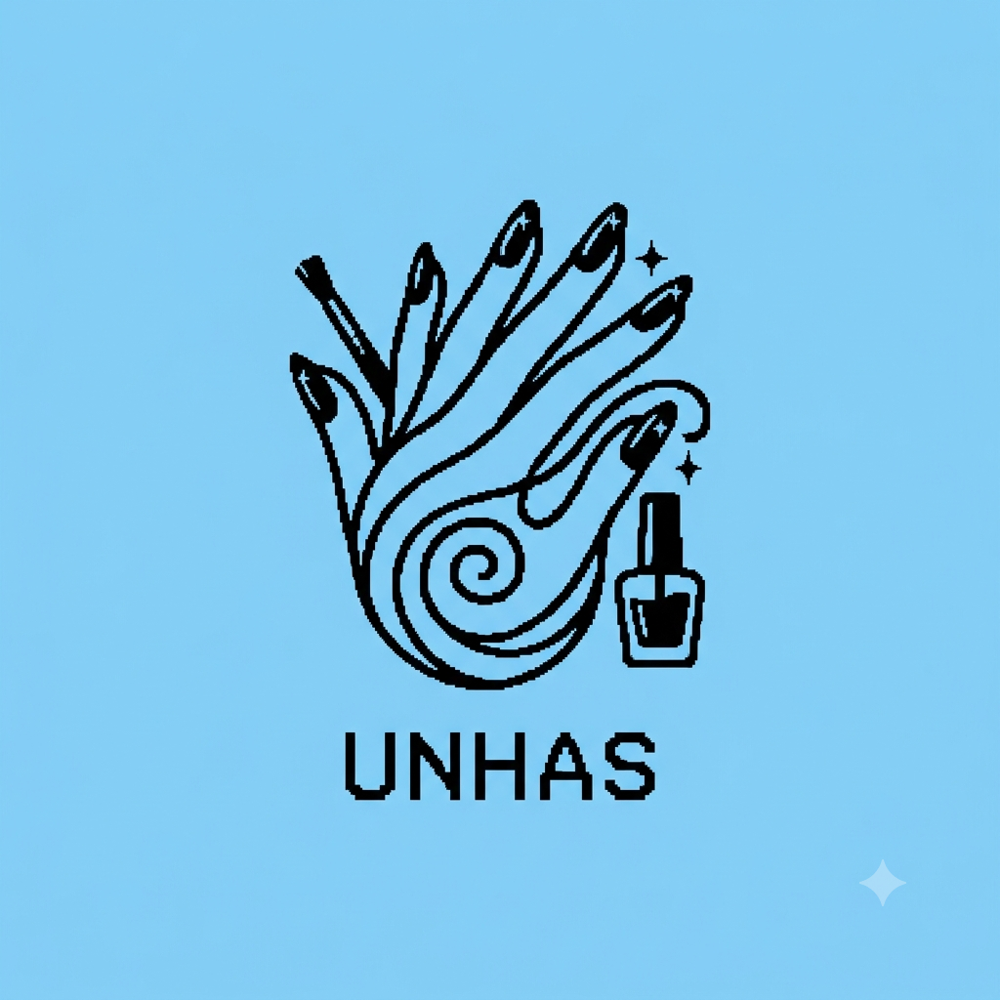
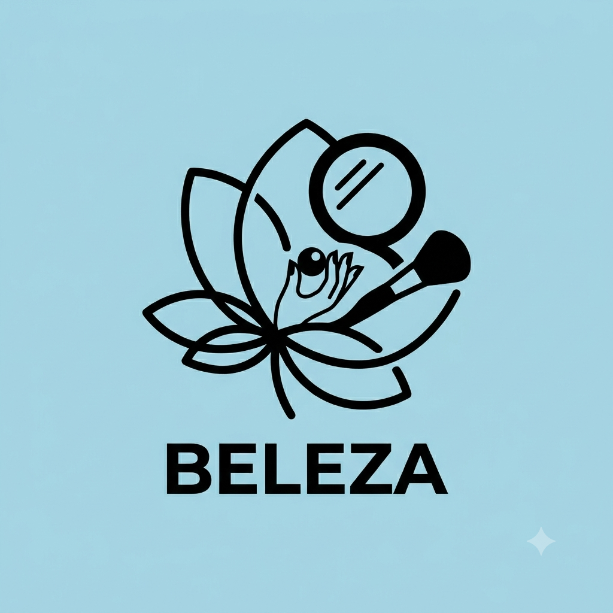
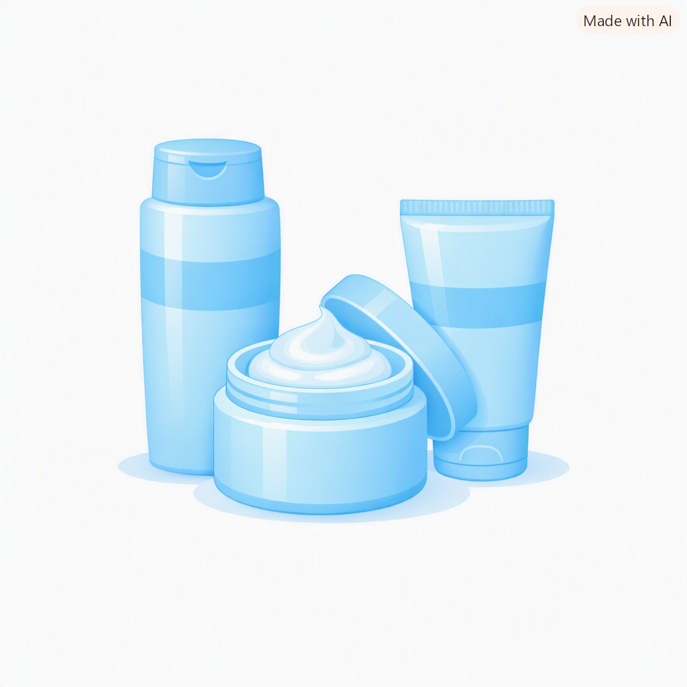

Meu primeiro post
Por: Milena Magaalhães
Boas-vindas ao meu novo blog! Aqui vou compartilhar dicas de beleza e curiosidades da área de unhas.
Vou compartilhar conhecimentos sobre beleza e unhas

Meu primeiro post
Por: Milena Magaalhães
Boas-vindas ao meu novo blog! Aqui vou compartilhar dicas de beleza e curiosidades da área de unhas.

minha segunda Publicação
Por: Milena magalhães

Ideias de Projeto
Por: Milena Magalhães
Opção 1:cremes de hidratação
Opção 2: peças lucrativas (Foco em Vendas):
Opção 3: Tendências Instagramáveis